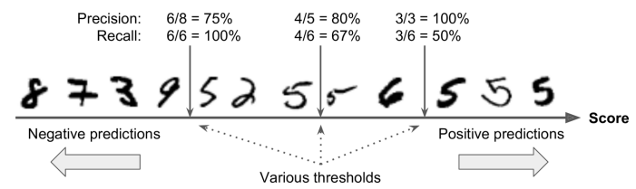

Accuracy is generally not the preferred performance measure for classifiers, especially when you are dealing with skewed datasets (i.e., when some classes are much more frequent than others).
Correctly classified negative instances are called True Negatives (1st row, 1st col).
Incorrectly classified negative instances as positive are called False Positives (1st row, 2nd col).
Incorrectly classified positive instances as negative are called False Negatives (2nd row, 1st col).
Correctly classified positive instances are called True Positives (2nd row, 2nd col).
1.3 Precision
Precision is given by:
TP is the number of true positives, and FP is the number of false positives.
Precision can be thought of as: Of all the instances that the classifier predicts as the positive class, how many are actually positive?
Precision is typically used by another metric named Recall, also called Sensitivity or True Positive Rate.
1.4 Recall
Recall is given by:
Recall can be thought of as: Of all the positive instances that are actually present in the dataset, how many are predicted as positive by the classfier?
Below is a figure showing the Confusion Matrix with Precision and Recall.
It is often convenient to combine precision and recall into a single metric called the F1 score, in particular if you need a simple way to compare two classifiers.
The F1 score is the harmonic mean of precision and recall.
Whereas the regular mean treats all values equally, the harmonic mean gives much more weight to low values.
As a result, the classifier will only get a high F1 score if both recall and precision are high.
The F1 score favors classifiers that have similar precision and recall. This is not always what you want.
In some contexts you mostly care about precision, and in other contexts you really care about recall.
1.5 Precision/Recall Tradeoff
Increasing precision reduces recall, and vice versa. This is called the precision/recall trade-off.
To understand this trade-off, let’s look at how the SGDClassifier makes its classification decisions. For each instance, it computes a score based on a decision function. If that score is greater than a threshold, it assigns the instance to the positive class; otherwise it assigns it to the negative class. Figure 2 shows a few digits positioned from the lowest score on the left to the highest score on the right. Suppose the decision threshold is positioned at the central arrow (between the two 5s): you will find 4 true positives (actual 5s) on the right of that threshold, and 1 false positive (actually a 6). Therefore, with that threshold, the precision is 80% (4 out of 5). But out of 6 actual 5s, the classifier only detects 4, so the recall is 67% (4 out of 6). If you raise the threshold (move it to the arrow on the right), the false positive (the 6) becomes a true negative, thereby increasing the precision (up to 100% in this case), but one true positive becomes a false negative, decreasing recall down to 50%. Conversely, lowering the threshold increases recall and reduces precision.
Precision/Recall Tradeoff
Scikit-Learn does not let you set the threshold directly, but it does give you access to the decision scores that it uses to make predictions.
Instead of calling the classifier’s predict() method, you can call its decisionfunction() method.
First, use the cross_val_predict() function to get the scores of all instances in the training set, but this time specify that you want to return decision scores instead of predictions: